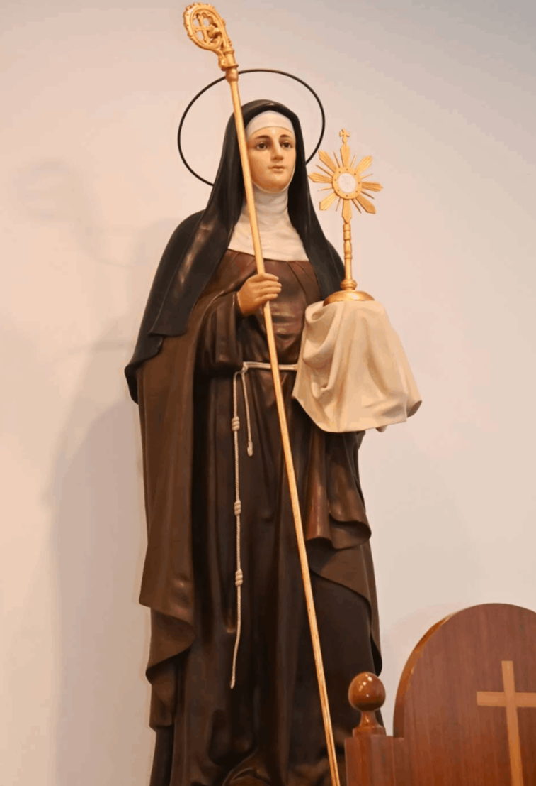

Free AI Website MakerClara nació en Asís, Italia, en 1193. Procedía de muy ilustre linaje. Su padre era caballero, y toda su familia, pertenecía a la nobleza militar. Su casa era un castillo, con bienes muy copiosos.
Su madre, abundaba en no escasos frutos de bien. Junto con sus deberes de esposa y del cuidado del hogar, se entregaba al servicio de Dios y a intensas prácticas de piedad.
En este ambiente creció Clara, y desde la tierna infancia, empezó a brillar por la rectitud de sus costumbres. De labios de su madre, recibió con dócil corazón los primeros conocimientos de la fe, que la llevaban a alargar la mano a los pobres…y de la abundancia de su casa colmaba la indigencia de muchos. Y para que su sacrificio fuera más grato a Dios, se privaba de los alimentos más delicados y se los daba a los pobres. Así creció Clara.
Ya en su juventud, Clara oye hablar de Francisco de Asís y de su modo de vida. Descubre en su interior la voz de Dios que la llama a seguirle por el camino que Francisco había trazado: vivir el santo Evangelio. Clara y Francisco repiten sus conversaciones en las que comparten la llamada que Dios les hace. Francisco exhorta a Clara al abandono del mundo, de sus riquezas… de esa vida superficial que no llena y deja el corazón vacío. Y ella, siguiendo el consejo de Francisco, continúa con su vida de piedad y de oración. Descubre entonces que sólo Cristo la hace feliz. Y decide seguirle radicalmente. Pero la llamada de Dios no coincide con los planes de su familia. Clara es la primogénita, y por eso, quieren casarla con un joven de la nobleza, rico y con un gran porvenir material. Pero ella, desprecia estos planes, y así una y otra vez, rechaza las propuestas familiares, despreciando todos los honores y riquezas materiales para encontrar la profunda felicidad.
Acude entonces a Francisco, que se apresura a sacar a Clara de las promesas familiares, determinando entre los dos la huida de su casa. Llegado el 18 de marzo, por la noche, Clara emprende la ansiada fuga con la compañía de una amiga. Franqueó con sus propias manos, con una fuerza que a ella misma le pareció extraordinaria, una puerta del castillo que estaba sellada por pesados maderos y piedras.
Y así, abandonados el hogar, la ciudad y su familia, corrió a Santa María de la Porciúncula, donde Francisco y sus frailes la esperaban con antorchas ante el altar. Allí, delante de la Virgen, Clara se despoja de sus galas, se viste con una pobre túnica, ceñida por una cuerda. Francisco le corta su hermosa cabellera y cubre su cabeza con un velo, en señal de Consagración total al Señor.
Clara fue instalada provisionalmente por San Francisco con las monjas benedictinas de San Pablo, cerca de Bastia, pero su tío Monaldo (tutor de Clara tras la muerte de su padre) que esperaba para ella un espléndido matrimonio, y que estaba furioso por su huida secreta, hizo lo posible, al descubrir su retiro, para disuadirla de su proyecto, e incluso trató de llevarla a casa por la fuerza. Pero Clara se sostuvo con una firmeza por encima de la propia de su edad, y el conde Favarone se vio finalmente obligado a dejarla.
Pocos días más tarde San Francisco, con el fin de proporcionar a Clara la gran soledad que deseaba, la transfirió al monasterio del Santo Ángel en Panzo, otro monasterio de benedictinas en una de las faldas del monte Subasio. Aquí, a los dieciséis días de su huida, se le unió su hermana Inés, de la que fue instrumento de liberación frente a la persecución de sus furiosos familiares.
Clara y su hermana permanecieron con las monjas del Santo Ángel hasta que junto con otras hermanas fueron establecidas por San Francisco a la pobre capilla de San Damián, situada fuera de los muros de la ciudad, construido en gran parte por sus propias manos, y que había obtenido de las Benedictinas como morada permanente para sus hijas espirituales. De este modo fue fundada la primera comunidad de la Orden de las Damas Pobres, o Clarisas.
Santa Clara, que en 1215 había sido hecha Abadesa de San Damián por San Francisco, en gran parte contra sus deseos, continuó gobernando allí como abadesa hasta su muerte en 1253, casi cuarenta años más tarde. Santa Clara, llegó a ser una réplica viva de la pobreza, la humildad y la mortificación de San Francisco. Tenía una especial devoción hacia la Sagrada Eucaristía, y con el fin de incrementar su amor a Cristo crucificado aprendió de corazón el Oficio de la Pasión compuesto por San Francisco, y durante el tiempo que le dejaban sus ejercicios devocionales se dedicaba a labores manuales.
Es innecesario añadir que durante la guía de Santa Clara, la comunidad de San Damián se convirtió en el santuario de la virtud, un auténtico vivero de santas. Clara tuvo el consuelo no sólo de ver a su hermana menor Beatriz, a su madre Ortolana siguiendo a su hermana Inés e ingresando en la Orden, sino también de ser testigo de la fundación de conventos de Clarisas a lo largo y ancho de Europa. Sería difícil, sin embargo, estimar cuánto hizo la silenciosa influencia de la abadesa para guiar a las mujeres medievales hacia metas más altas. En particular, Clara esparció en torno a su pobreza ese encanto irresistible que sólo las mujeres pueden comunicar de heroísmo civil o religioso, y llegó a ser la más eficaz ayudante de San Francisco en promover ese espíritu de desprendimiento que según los consejos de Dios "produjo una restauración de la disciplina de la Iglesia y de la moral y civilización en Europa Occidental". Sin duda no fue la parte menos importante de la obra de Clara la ayuda y el ánimo que dio a San Francisco.
En una ocasión en la que éste creía que su vocación descansaba en una vida contemplativa, acudió a ella con sus dudas, y Clara le urgió para que continuara con su misión apostólica. Cuando en un ataque de ceguera y enfermedad San Francisco fue por última vez a visitar San Damián, Clara erigió para él una pequeña choza en un olivar próximo al convento, y allí fue donde compuso su glorioso "Cántico de las Criaturas". Tras la muerte de San Francisco, la procesión que acompañaba sus restos desde la Porciúncula hasta la ciudad paró en San Damián para que Clara y sus hermanas pudieran venerar los pies y manos llagados de quien las había transformado al amor de Cristo crucificado. Sin embargo, en lo concerniente a Clara, San Francisco siempre estuvo vivo, y nada hay, tal vez, más llamativo en su vida posterior que su inquebrantable lealtad a los ideales del Poverello, y el celoso cuidado con el cual se agarró a su regla y a su enseñanza.

Cuando, en 1234, el ejército de Federico II estaba devastando el valle de Espoleto, los soldados, preparándose para el asalto de Asís, escalaron los muros de San Damián de noche esparciendo el terror entre la comunidad. Clara se levantó tranquilamente de su lecho de enferma, y cogiendo la Custodia de la pequeña capilla aneja a su celda, hizo frente a los invasores, que ya habían apoyado una escalera en una ventana abierta. Se cuenta que, conforme ella iba alzando en alto el Santísimo Sacramento, los soldados que iban a entrar cayeron de espaldas como deslumbrados, y los otros que estaban listos para seguirles iniciaron la huida. Debido a este incidente, Santa Clara es generalmente representada portando una Custodia.
Cuando finalmente sintió que el día de su muerte se acercaba, Clara, llamando a sus afligidas religiosas en su torno, les recordó los muchos beneficios que habían recibido de Dios y las exhortó a que perseveraran llenas de fe en la observancia de la pobreza evangélica. El papa Inocencio IV vino desde Perusa para visitar a la santa moribunda, que ya había recibido los últimos sacramentos de manos del cardenal Rainaldo.
Era el verano de 1253. Unidas las manos, tuvo fuerzas para pedirle al Papa su bendición, con la indulgencia plenaria. El Papa contestó, sollozando: "Quiera Dios, hija mía, que no necesite yo más que tú de la misericordia divina".
Lloran las monjas la agonía de Clara. Todo es silencio. Sólo un murmullo brota de los labios de la santa:
“Oh Señor, te alabo, te glorifico, por haberme creado.”
Una de las hermanas le preguntó:
“¿Con quién hablas, Madre?”
Ella contestó:
“Hablo con mi alma bendita.”
Y expiró. Era el 11 de agosto de 1253. Fue canonizada dos años más tarde, el 15 de agosto de 1255, por el papa Alejandro IV, quien en la bula correspondiente declaró que ella "fue alto candelabro de santidad", a cuya luz "acudieron y acuden muchas vírgenes para encender sus lámparas".
De ella dijo su biógrafo Tomás Celano:
"Clara por su nombre; más clara por su vida; clarísima por su muerte"
Free AI Website Maker